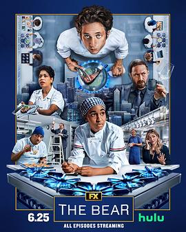

熊家餐馆 第四季 / The Bear Season 4
又名：大熊餐厅(台)
原来每次的葬礼片段我是一直没看懂啊
作品信息
| 导演 | 克里斯托弗·斯托勒 / 杜乔·法布里 / 加妮克扎·布拉沃 |
| 编剧 | 克里斯托弗·斯托勒 / 凯瑟琳·谢蒂娜 / 阿尤·艾德维利 / 莱昂内尔·博伊斯 / 雷内·古布 |
| 主演 | 杰瑞米·艾伦·怀特 / 艾邦·摩斯-巴克拉赫 / 阿尤·艾德维利 / 莱昂内尔·博伊斯 / 艾比·艾略特 / 马蒂·马得胜 / 莉莎·科伦-扎亚斯 / 埃德温·李·吉布森 / 杰米·李·柯蒂斯 / 莫莉·戈登 / 科里·亨德里克斯 / 奥利弗·普莱特 / 乔·博恩瑟 / 吉莉安·雅各布斯 / 亚当·沙皮罗 / 莎拉·拉莫斯 / 雷内·古布 / 丹妮尔·戴德怀勒 / 阿丽翁·金 / 安德鲁·洛佩兹 / 阿尔帕娜·辛格 / 理查德·埃斯特拉斯 / 何塞·M·塞万提斯 / 克里斯·维塔斯凯 / 罗伯特·汤森德 / 瑞奇·斯塔菲里 / 克里斯托弗·祖切罗 / 保利·詹姆斯 |
| 类型 | 剧情 / 喜剧 |
| 制片国家/地区 | 美国 |
| 语言 | 英语 |
| 首播 | 2025-06-25(美国) |
| 季数 | 4 |
| 集数 | 10 |
| 单集片长 | 30分钟 |
| IMDb | tt32765561 |
最后一次看到是 2026-08-12T17:47:02+08:00 · 豆瓣原页